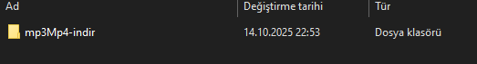
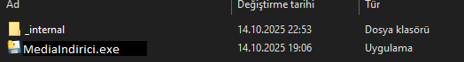
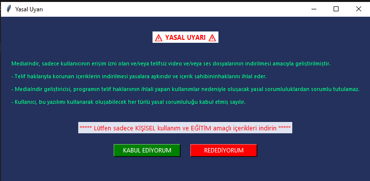
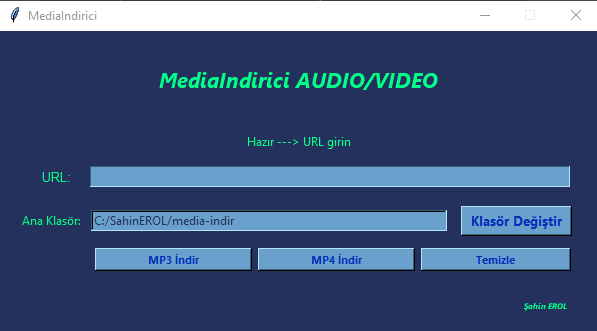

MediaIndirici AUDIO/VIDEO
Araştırma ve Test Programı Kullanım Klavuzu
- mp3mp4-indir klasörünü açınız.


- mp3mp4-indir.exe sekmesine çift tıkalayınız.

- Yasal uyarı kabul ediniz.

- İndirmek istediğiniz Medya linkini URL satırına yazınız veya "ctrl+v" yaparak yapıştırınız
- Hangi dosyaya indireceğinizi seçiniz
- Medya türüne göre ilgili butona tıklayınnız.
Not :
Progaram ilk kez çalışıyorsa gerekli dosyaları indirip kuracaktır.